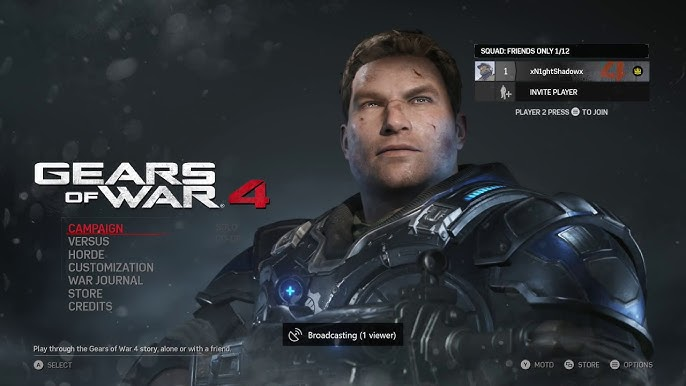
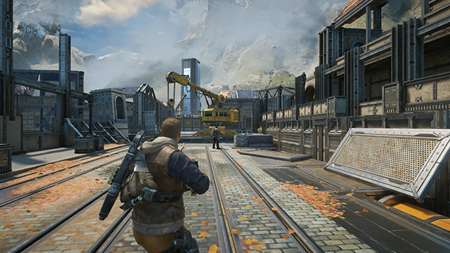
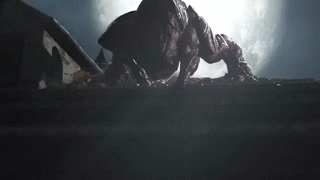

Gears of War 4
 |
 |
 |
 |
Desenvolvedora: The Coalition
Plataforma: Xbox One e PC (Retrocompatível com Xbox Series S/X)
Ano de Lançamento: 2016
Sinopse: Situado 25 anos após os eventos de Gears of War 3, o mundo de Sera mudou drasticamente. Com a Horda Locust destruída e a Emulsão erradicada, a humanidade agora vive em cidades muradas sob o controle rígido de uma nova Coalizão de Governos Ordenados (COG).
A história segue JD Fenix, filho de Marcus Fenix, que junto com seus amigos Kait e Del, deve enfrentar uma nova e aterrorizante ameaça biológica conhecida como The Swarm. O jogo marca o início de uma nova saga, focando no mistério por trás do desaparecimento de colônias inteiras e na busca desesperada por respostas sobre o ressurgimento do mal no planeta.